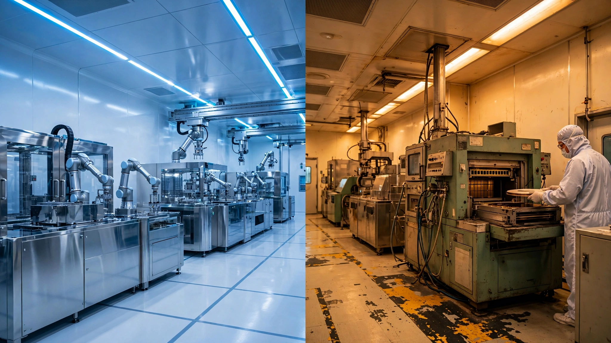

Bosch Spent $2B to Build What Wolfspeed Spent $6.5B Failing At
On Monday Bosch began sample production at its first American silicon carbide semiconductor factory, a converted 200 mm fab in Roseville, California that cost $2 billion. Wolfspeed, the company that pioneered commercial SiC and spent more than $6.5 billion building a greenfield fab in upstate New York, emerged from Chapter 11 bankruptcy last September with negative gross margins and a stock that had touched $1.16. Die-yield math on the 150 mm-to-200 mm wafer transition reveals why the brownfield strategy wins and what it means for every electric vehicle on the road.

Negative 16.1 percent. Wolfspeed's trailing-twelve-month gross margin as of its most recent quarterly filing means every silicon carbide chip leaving its fabs costs more to manufacture than it sells for, before a single engineer collects a paycheck or a single kilowatt-hour lights the cleanroom. A company that invented commercial SiC power semiconductors, that convinced Renesas to prepay $2.06 billion for future wafers, now moves product below the cost of the raw substrate it sits on.
Three thousand miles west, in a suburb of Sacramento, Bosch just powered on the tools in a factory it bought for a fraction of what Wolfspeed spent building one from scratch. Roseville's fab was a working silicon ASIC foundry called TSI Semiconductors when Bosch acquired it in August 2023, and the conversion to silicon carbide cost $2 billion total, including a $225 million CHIPS and Science Act grant finalized under the Trump administration, with commercial shipments targeted for later this year. Strip the old process tools, install epitaxial reactors and ion implanters rated for the 1,700-degree temperatures SiC crystal growth demands, and keep the 250 trained technicians who already know how to run a cleanroom, with sample wafers starting to flow on Monday.
Wolfspeed's Mohawk Valley facility in Marcy, New York, was a greenfield moonshot by comparison: new walls, new cleanroom, new utilities, new everything, financed with debt that ballooned past $6.5 billion before any customer shipment reached volume. On June 30, 2025, the company filed for Chapter 11 protection, emerged on September 29 after shedding $4.6 billion in obligations, and immediately began dismantling the assumptions that put it there.
A 3.25× Capital Gap
Set the two factories side by side and the numbers are stark. Both produce silicon carbide power devices on 200 mm wafers, both serve the automotive market, both received federal CHIPS Act grants, and both aim to feed the same exploding demand curve in electric vehicle power inverters. Bosch spent $2 billion. Wolfspeed spent $6.5 billion. Ratio: 3.25 to 1.
Most of that gap originates in the cleanroom shell, because air filtration systems capable of holding Class 100 particulate standards across tens of thousands of square feet, vibration-isolated foundations poured to sub-micrometer tolerance, chemical delivery networks plumbed for dozens of reactive gases, ultrapure water loops running at 18.2 megohm-centimeter resistivity, and electrical infrastructure sized for megawatts of continuous draw add up to somewhere between $800 million and $1.2 billion before a single process tool is bolted to the floor, according to semiconductor capital expenditure benchmarks published by SEMI. Bosch inherited every piece of it because TSI's Roseville site had manufactured semiconductors for nearly 40 years.
Retooling was still expensive because silicon carbide requires entirely different epitaxial reactors, different implant tools, and furnaces that operate at temperatures silicon never approaches. Most process equipment was replaced, but the building, the infrastructure, and a workforce trained in wafer handling, contamination control, and cleanroom protocol came with the keys, and in semiconductor manufacturing that brownfield advantage compounds through every quarter of the ramp.
Die Yield: Where the Transition Pays Off
Both Bosch and Wolfspeed manufacture on 200 mm wafers, but most SiC production still runs on 150 mm substrates in older fabs, which is precisely where the economics become interesting for anyone calculating when silicon carbide power electronics will be cheap enough for base-model EVs rather than luxury trims alone.
A 200 mm wafer has a total area of 31,416 square millimeters versus 17,671 for a 150 mm wafer, a 1.78× increase in raw real estate, but die count improvement beats that ratio because edge exclusion zones consume a fixed ring around the perimeter regardless of diameter. Run the geometry with a typical 25-square-millimeter SiC MOSFET die and a 5 mm edge exclusion: usable area on a 150 mm wafer yields roughly 615 gross dies while the same die on a 200 mm wafer yields approximately 1,134, an 84 percent jump in device count for a wafer that costs about 40 to 50 percent more to process because the number of lithography, etch, and deposition steps is identical regardless of diameter.
Divide it out: at 1.45× processing cost you get 1.84× the dies, producing a roughly 21 percent reduction in cost per device on the larger wafer. Scale that across average SiC content of $600 per electric vehicle, multiply by 30 million EVs projected annually by 2030, and that 21 percent saving across hundreds of millions of devices compounds into billions flowing through the supply chain, pushing silicon carbide from a premium upsell into standard equipment.
Utilization Killed Wolfspeed's Economics
Die yield explains why 200 mm wafers matter. It does not explain why Wolfspeed bleeds money operating a fab purpose-built for them.
Semiconductor fabs rank among the most capital-intensive structures on Earth, and their entire economic logic pivots on throughput because depreciation, maintenance, utilities, and staffing are overwhelmingly fixed costs that the factory incurs whether it processes ten wafers a day or ten thousand. A fab running at 25 percent utilization pays the same electricity bill, the same property taxes, and nearly the same headcount as one cranking at 90 percent. Every chip produced at quarter-capacity absorbs four times its rightful share of overhead, and when you are already competing in a commodity market where pricing pressure runs roughly 10 percent per year, the math becomes unsurvivable.
Wolfspeed built Mohawk Valley for high-volume production that never arrived on schedule. Construction delays pushed timelines, the EV market decelerated through late 2024 and early 2025 as interest rates and tariff uncertainty crimped consumer purchases, and customers who had signed long-term supply agreements began renegotiating exposure rather than waiting for chips running months behind plan. Renesas, which had prepaid $2.06 billion, converted its position into equity, bonds, and warrants at an expected loss of approximately $2 billion. Revenue for Wolfspeed's most recent quarter landed at $150.2 million, down 19 percent year over year, with trailing-twelve-month revenue at $757.6 million against accumulated capital exceeding $8 billion since the 2021 Cree spinoff. Nine cents of annual revenue per dollar invested.
Bosch enters carrying none of that baggage, backed by $91.6 billion in annual group revenue and a captive customer base already purchasing its silicon-based power chips for vehicles rolling off production lines today. It does not need to hunt for demand because demand already fills its order books, and that structural advantage in utilization is what makes the brownfield approach work: you start closer to break-even on day one because the building is already paid for and the customers are already yours.
Wolfspeed's Counterargument Deserves Full Weight
Writing Wolfspeed off entirely would be wrong, because the strongest case for the company is technological and genuinely difficult for any competitor to replicate. In June, Wolfspeed signed a memorandum of understanding with GE Aerospace to co-develop 10-kilovolt SiC MOSFET power modules for aerospace, defense, and solid-state transformer applications, a voltage class where GE has already qualified Wolfspeed devices for U.S. military ground vehicles and where Bosch, Infineon, and every other competitor make absolutely nothing.
Beyond voltage leadership, Wolfspeed has demonstrated the first production-quality 300 mm silicon carbide crystal, a milestone that would repeat the 200 mm die-yield improvement all over again if commercialized, pushing cost per die down another 20-plus percent and opening a crystal-growth moat no competitor has matched. Volume manufacturing on 300 mm substrates remains years out. But the crystal exists, and in this industry that matters.
And demand is expanding fast enough to absorb everyone. Persistence Market Research projects global SiC wafer revenue at $2.2 billion in 2026, growing to $10.3 billion by 2033 at a 24.3 percent compound annual growth rate, with current production capacity at roughly 2.5 million square inches per year and announced expansions by Wolfspeed, Bosch, Infineon, ON Semiconductor, STMicroelectronics, and Chinese producers pushing planned capacity toward 8 million square inches by 2030. Most projections suggest a supply gap persists through the end of the decade regardless of who ramps fastest.
What This Analysis Misses
Bosch is privately held and does not disclose segment-level capital expenditure for its semiconductor division, so the $2 billion figure aggregates both acquisition cost and conversion investment without a public breakdown of how much went to new equipment versus how much represents the carrying value of TSI's existing assets. True cost-per-wafer-start at Roseville will not be knowable until commercial production ramps and results appear in Bosch's Mobility Solutions segment reporting. Wolfspeed's capital figures are more transparent through SEC filings, but the Mohawk Valley total includes spending on the upstream materials business alongside device fabrication, which means the 3.25× ratio overstates the gap somewhat if materials capex is stripped out, though the directional conclusion survives the adjustment.
Post-bankruptcy, Wolfspeed's capital structure is substantially lighter, with annual cash interest payments dropping 60 percent with $4.6 billion in debt eliminated, and the stock has recovered from $1.16 to $36 as of Monday's close. Markets are pricing in a turnaround the trailing financials have not yet confirmed, which could mean either prescience or premature optimism depending on how quickly Mohawk Valley's utilization ramps through the second half of the year.
China introduces a variable neither company controls: SICC, TankeBlue, and other Chinese SiC producers now hold roughly 35 percent of the global wafer and epitaxy market and are expanding aggressively at cost structures that may undercut both Western manufacturers, particularly given a domestic EV demand base of 12.87 million passenger vehicles sold in Asia-Pacific in 2024 alone. Neither Bosch's brownfield efficiency nor Wolfspeed's technology lead may matter much if Chinese producers achieve cost parity on 200 mm substrates within three years, a timeline multiple industry analysts consider plausible.
What This Means for You
If you are shopping for an electric vehicle before 2029, pay attention to which inverter technology sits between the battery and the motor, because SiC power inverters lose roughly 50 percent less energy as waste heat compared to conventional silicon IGBTs, translating to 5 to 8 percent more range from the same battery pack. As device costs fall through the 200 mm wafer transition, automakers currently reserving SiC for premium trims will push it into base models, and the timeline for that shift depends directly on how fast Bosch, Wolfspeed, and their competitors fill the supply gap that persists today.
If you invest in semiconductor supply chains, the structural lesson is this: in SiC specifically and in specialty semiconductors broadly, the venture-backed first-mover strategy that works in software becomes a capital trap when applied to physical factories because the physics of semiconductor manufacturing reward patient industrialists who buy existing infrastructure, bring captive demand from day one, and ramp deliberately rather than pioneers who build cathedrals on borrowed money before the congregation arrives. Wolfspeed proved the technology. Bosch may prove the business model. Both were necessary. Decide which one you want to own.
For policymakers administering CHIPS Act grants, Roseville stands as a template: converting an existing fab cost less, produced jobs faster, and carries lower execution risk than greenfield construction, while the $225 million federal investment in Bosch will yield working chips this calendar year. By comparison, $750 million earmarked for Wolfspeed under the Biden administration never materialized. If rapid domestic SiC capacity is the objective, brownfield conversion offers a faster path at lower taxpayer cost, limited only by the supply of suitable existing fabs, a pool that is finite and shrinking as every viable candidate gets snapped up.